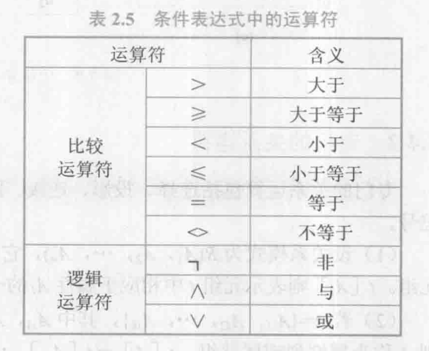

数据管理基础－－关系型数据库

关系数据结构及其形式化定义
关系
关系模型的数据结构是单一的，仅包含关系这一数据结构。对于用户而言，关系模型中的数据的逻辑结构是一张扁平的二维表
术语解释
域（domain）
域是一组具有相同数据类型的值的集合
笛卡尔积（cartesian product）
给定一组域$D_1,D_2,\dots,D_n$，则这组域的笛卡尔积为$D_1\times D_2\times\dots\times D_n={(d_1,d_2,\dots,d_n)|d_i\sub D_i}$
该集合中的每一个元素称为一个n元组(n-tuple)，简称元组(tuple)，元素中的每一个$d_i$称为一个分量(component)
域允许的不同取值个数称为域的基数(cardinal number)，显然有笛卡尔积的基数为各个域的基数之积
关系（relation）
笛卡尔积的子集称为在域$D_1,D_2,\dots,D_n$上的关系，表示为$R(D_1,D_2,\dots,D_n)$，R表示关系的名字，n称为这个关系的目或度（degree），当目为1时称该关系为单元关系（unary relation），或一元关系；当目为2时称为二元关系（binary relation）；n目关系一定有n个属性（attribute，每个列的名称或说明）
关系中的每个元素是关系中的元组，通常用t表示
候选码（candidate key）
如果某一属性组（可能包含多个属性）的值能唯一标识一个元组，且其子集不行，则将该属性组称为候选码
主码（prime key）
如果一个关系存在多个候选码，就选定其中一个作为主码
主属性（prime attribute）
候选码的所有属性都是主属性，不包含在任何候选码中的属性称为非主属性（non-prime attribute）或非码属性（non-key attribute）
全码（all-key）
如果关系模式的所有属性都是候选码（都是主属性不行），则称为全码
关系类型
基本关系
也称为基本表或基表，是实际存在的表，是实际存储数据的逻辑表示
查询表
查询结果对应的表
视图表
由基本表或其他视图表导出的表，是虚表，不对应实际存储的数据
关系性质
当关系作为关系数据模型的数据结构时，需要给出两个限制：①限制关系数据模型中的关系必须是有限集合（无限集合无意义）②通过为每一列添加属性名以取消关系属性的有序性（即使交换两列的顺序其意义也仅由属性名给出）
基本关系具有以下的性质：
- 列是同质（homogeneous）的，即每一列中分量的值类型相同，且来自同一个域
- 不同列的取值可来自同一个域，但不同的列（属性）的属性名必须不同
- 列的顺序可以任意交换
- 任意两个元组的候选码的取值不能相同
- 行的次序可以任意交换
- 分量必须取原子值，即每一个分量都要是不可分的数据项
关系模型要求关系必须是规范化的（normalization），即必须满足一定的规范条件约束，其中的一条就是上述性质的最后一条，规范化关系称为范式（Normal Form, NF）
关系模式
关系的描述称为关系模式（relation schema），可以形象地表示为$R(U,D,DOM,F)$
其中R表示关系名，U表示组成该关系的属性名集合，D表示U中属性所来自的域，DOM为属性到域的映像（即说明各个属性的取值都来自哪个域），F表示属性间数据的依赖关系集合（暂不讨论）
关系模式通常可以简记为$R(A_1,A_2,\dots,A_n)$，其中$A_1,A_2,\dots,A_n$是属性名，而域和属性到域的映射一般直接说明为属性的类型和长度。关系模式是静态不变的，而关系往往是动态变化的
关系数据库
所有关系的集合构成一个关系数据库，关系数据库有型和值之分，其型称为关系数据库模式，是对关系数据库的描述。关系数据库模式包含了若干域的定义，以及在这些域上定义的若干关系模式
关系数据库的值是这些关系模式在某一时刻对应的关系的集合，通常称为关系数据库
关系模型的存储结构
分为将物理存储交给操作系统处理和申请空间自行管理两类
关系操作
基本关系操作
包括查询(query)和插入(insert)、删除(delete)、修改(update)两部分
其中查询可以分为选择(select)，投影(project)，连接(join)，除(divide)，并(union)，差(except)，交(intersection)，笛卡尔积等，其中选择、投影、并、差、笛卡尔积是基本操作，其他操作可以由基本操作导出
关系操作的特点是集合操作方式，即操作的对象和结果都是集合，也称为一次一集合(set-at-a-time)；相应的非关系数据模型的数据操作方式为一次一记录(record-at-a-time)
关系数据语言分类
代数方式的关系操作称为关系代数(relational algebra)，用对关系的运算来表达查询要求；而逻辑方式则称为关系演算(relational calculus)，用谓词来表达查询要求，按照谓词变元的基本对象是元组变量还是域变量分为元组关系演算和域关系演算。介于两者之间还有结构化查询语言(Structured Query Language, SQL)，是集查询、数据定义语言、数据操纵语言和数据控制语言(Data Control Language, DCL)于一体的关系数据语言，也是一种高度非过程化的语言，用户只需要描述需求，具体的过程由DBM的优化机制完成
关系完整性
关系模型中有三种完整性约束，分别是实体完整性(entity integrity)，参照完整性(referential integrity)和用户定义的完整性(user-defined integrity)。其中前两个完整性是关系模型必须满足的完整性约束条件，称为关系的两个不变性
实体完整性
若属性组A是基本关系R的主属性（即包含在主码中），则A中所有属性都不能取空值(null value)，实体完整性的具体规则如下：
- 实体完整性规则是针对基本关系而言的
- 现实世界中的实体可区分，即它们具备唯一性标识
- 关系模型中以主码作为唯一性标识
- 主码中的属性即主属性不能取空值
参照完整性
关系与关系之间存在相互引用、相互约束的情况，设F是基本关系R的一个或一组属性，但不是关系R的码，$K_S$是基本关系S的主码。如果F与$K_S$相对应，则称F是R的外码(foreign key)，并称基本关系R为参照关系(referencing relation)，基本关系S为被参照关系（referenced relation）或目标关系(target relation)，其中R与S不一定是不同关系，外码与相应的主码并不一定要同名。例如：在关系专业（专业号，专业名）和学生（姓名，学号，专业号）之间，专业号就是关系专业的主码，与学生关系中的专业号相对应，则专业号是学生的外码
参照完整性的规则定义了外码与主码之间的引用规则：若F是基本关系R的外码，与基本关系S的主码$K_S$相对应，则R中每个元组在F上的取值要么全为空值，要么等于S中的某个元组的主码值
用户定义的完整性
针对某一具体关系数据库的约束条件，反映某一具体应用所涉及的数据必须满足的语义要求
关系代数
关系代数是一种抽象的查询语言，使用对关系的运算来表达查询。关系代数运算符可以分为传统集合运算和专门的关系运算两类
传统集合运算
传统集合运算是二目运算，包含下面四种运算：
并（union，∪）
$R∪S={t|t\sub R\or t\sub S}$
差（except，$-$）
$R-S={t|t\sub R\and t\not\sub S}$
交（intersection，∩）
$R∩S={t|t\sub R\and t\sub S}$
笛卡尔积（$\times$）
$R\times S={t_R,t_S|t_R\sub R\and t_S\sub S}$，即将关系S中的属性拼接在关系R的属性中
专门关系运算
为叙述方便，引入的记号如下：
- 如果t是关系R的一个元组，则$t[A_i]$表示元组t中相应于属性$A_i$的一个分量
- 若A是一个属性组，则$t[A]=(t[A_{i1}],t[A_{i2}],\dots,t[A_{ik}])$表示元组t在属性组或属性列A上诸分量的集合，$\overline{A}$表示所有属性中除去A中包含的属性后形成的集合
- 类似于笛卡尔积的运算称为元组的连接（concatenation）或元组的串接
- 给定一个关系$R(X,Z)$，其中X和Z为属性组，当$t =x$时，x在R中的象集(images set)为$Z_x={t[Z]|t\sub R,t =x}$，表示R中属性组X上值为x的诸元组在Z上分量的集合
选择（selection，$\sigma$）
也称为限制（restriction），在关系中选择满足给定条件的诸元组，即$\sigma_F(R)={t|t\sub R\and F(t)=$‘真’$}$，其中F表示选择条件

投影（project，$\prod$）
关系R上的投影是从R中选择出若干属性列组成新的关系，即$\prod_A(R)={t[A]|t\sub R}$，其中A为R中的属性列
连接（join，⋈）
也称为θ连接，从两个关系的笛卡尔积中选取属性间满足一定条件的元组，记为$R⋈_{A\theta B}S={t_R,t_S|t_R\sub R\and t_S\sub S\and t_R[A]\theta t_S[B]}$，其中θ为比较运算符，表示从R关系中选出属性A，从S关系中选出属性B，对两者进行比较
连接运算中有两种最重要也最常用的连接，分别是等值连接（equijoin，即θ运算符为等号的连接）和自然连接（natural join，在等值连接的基础上要求进行比较的属性组必须同名，并且在连接时去掉重复的属性列）
在连接中被舍弃的元组称为悬浮元组（dangling tuple），如果将悬浮元组也保留在结果关系中，而在其他属性上填空值，就将这种连接称为外连接（outer join），如果只保留左边关系R中的悬浮元组则称为左外连接（left outer join），同理有右外连接
除（divide，÷）
书上的定义太玄幻了，下文来自chatGPT（欸嘿）
关系代数中的除法是一种用于关系查询的操作，用于查询出所有满足条件的关系，通常用符号÷或/表示。其定义如下：
给定两个关系R和S，其中R包含属性集合{A1, A2, …, An, B1, B2, …, Bm}，S包含属性集合{A1, A2, …, An}，则R÷S的结果为包含属性集合{B1, B2, …, Bm}的关系T，满足对于R中的每个元组r，如果S中存在一个元组s，满足r[A1]=s[A1]、r[A2]=s[A2]、…、r[An]=s[An]，则T中应包含一个元组，其中T[B1]=r[B1]、T[B2]=r[B2]、…、T[Bm]=r[Bm]。
简单来说，关系R÷S的结果是，通过查找在S中存在的元组，来得到在R中那些满足条件的元组所对应的属性集合，即剔除了在R中没有匹配的元组。
总结
在上述运算中，并、差、笛卡尔积、选择和投影是基本运算，其他运算可由它们导出。
在关系代数中，这些运算经过有限次复合后形成的表达式称为关系代数表达式